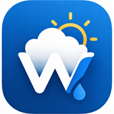

Weerscoop is offline
Controleer je internetverbinding. Zodra je opnieuw online bent, haalt Weerscoop automatisch het laatste weer op.

Controleer je internetverbinding. Zodra je opnieuw online bent, haalt Weerscoop automatisch het laatste weer op.